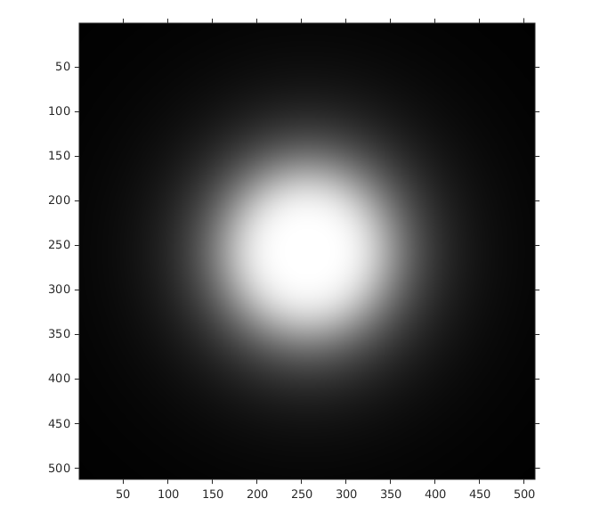
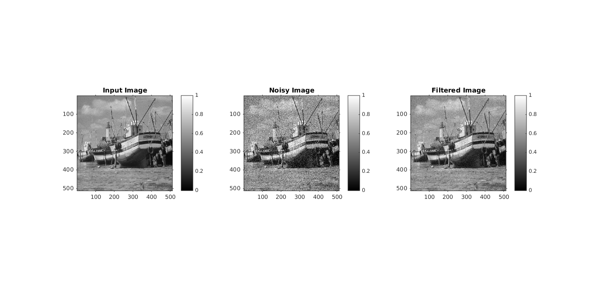
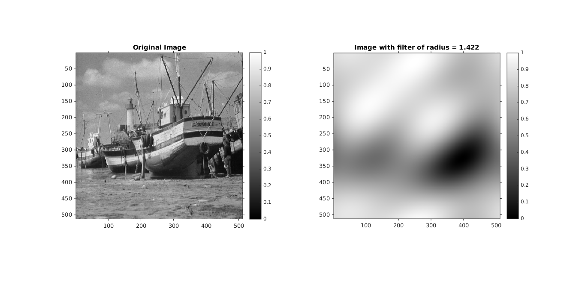
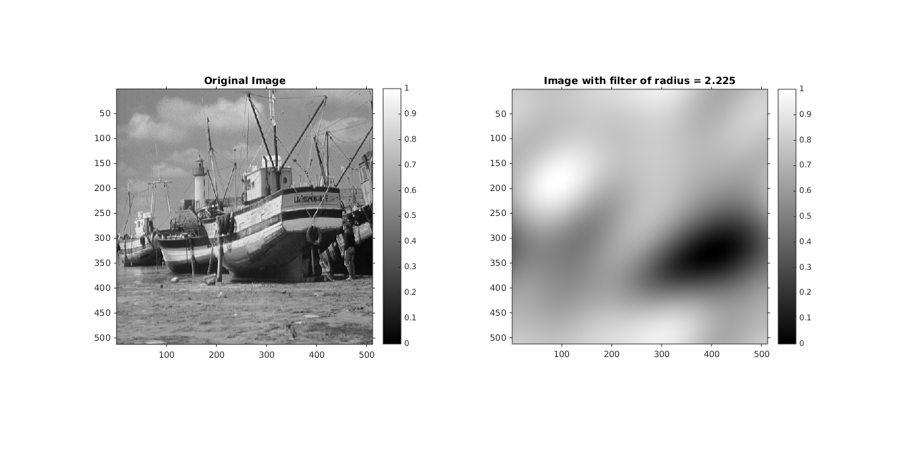
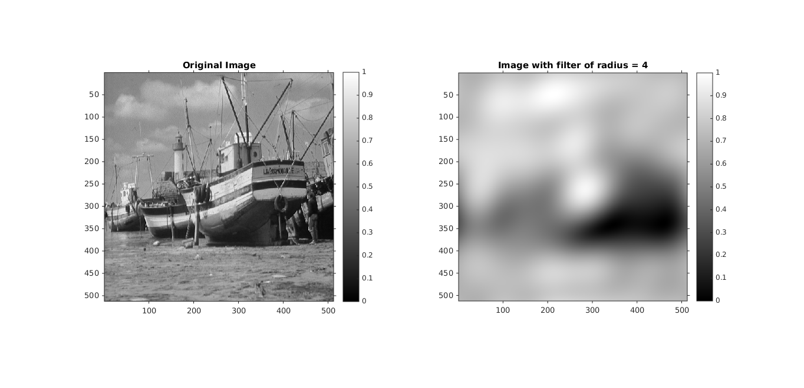
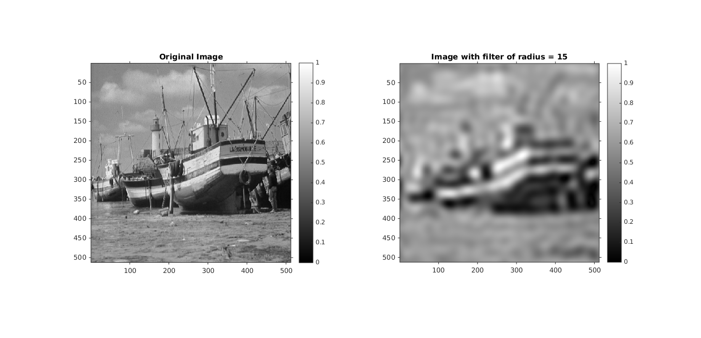
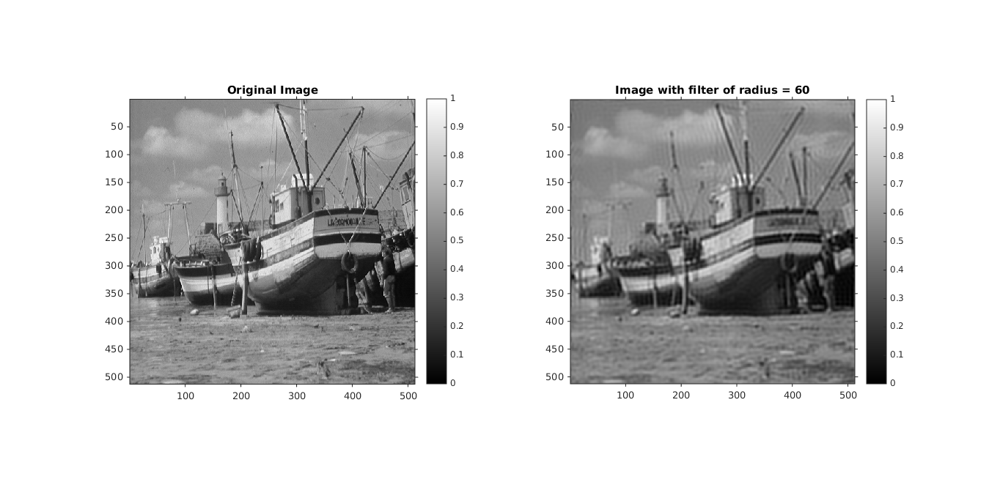

Contents
MyMainScript
tic;
inputStruct = load('../data/boat.mat');
inputImage = inputStruct.imageOrig;
[ img_x, img_y ] = size(inputImage);
d0 = 84;
[H, filteredImage] = myButterWorthFiltering(inputImage,2,d0);
imshow(H),colorbar;title('ButterWorth Filter in Frequency Domain')

ButterWorth Filter Part
frequency_cutoff_array = [.95, 1 ,1.05];
for i=1:3
normazlizedImage = inputImage/255;
noisyImage = imnoise(normazlizedImage,'gaussian',0,0.01)*255;
[H, filteredImage] = myButterWorthFiltering(noisyImage,2,frequency_cutoff_array(i)*d0);
diffImage = filteredImage - inputImage;
RMSD = sqrt(sum(sum(diffImage.^2))/(img_y*img_x));
disp(['RMSD =' num2str(RMSD)]);
iptsetpref('ImshowAxesVisible','on');
figure('units','normalized','outerposition',[0 0 1 1])
mainFig= subplot(1,3,1);
imshow(mat2gray(inputImage)), colorbar;
title('Input Image')
subplot(1,3,2);
imshow(mat2gray(noisyImage)), colorbar;
title('Noisy Image')
subplot(1,3,3);
imshow(mat2gray(filteredImage)), colorbar;
title(['Filtered Image for D0*' num2str(frequency_cutoff_array(i))])
name = strcat(['../images/butterworth_filter_final_' num2str(frequency_cutoff_array(i)) '.']);
file_name = strcat([name 'png'])
imwrite(mat2gray(filteredImage),file_name);
end
RMSD =11.2473
RMSD =11.2081

RMSD =11.2799
Energy Radius Part
nearest_percentage_array = [88,91,94,97,99];
radius_array = [1.422,2.225,4,15,60];
RMSD_array = [0,0,0,0,0];
percentage_array = [0,0,0,0,0];
for i=1:5
F=fft2(inputImage);
F=fftshift(F);
Energy = sum(sum((abs(F)).^2));
diskfilter = diskFilter(F,radius_array(i));
filteredImage = F.*diskfilter;
FilteredImageEnergy = sum(sum(abs(filteredImage).^2));
percentage = FilteredImageEnergy/Energy*100;
percentage_array(i) = percentage;
disp(['Percentage = ' num2str(percentage)]);
inverseImage = ifft2(filteredImage);
outputImage=sqrt(real(inverseImage).^2+imag(inverseImage).^2);
iptsetpref('ImshowAxesVisible','on');
figure('units','normalized','outerposition',[0 0 1 1])
mainFig= subplot(1,2,1);
imshow(mat2gray(inputImage)), colorbar;
title('Original Image')
subplot(1,2,2);
imshow(mat2gray(outputImage)), colorbar;
title(['Image with filter of radius = ' num2str(radius_array(i))]);
name = strcat(['../images/energy_analysis_final_' num2str(nearest_percentage_array(i)) '.']);
file_name = strcat([name 'png'])
imwrite(mat2gray(outputImage),file_name);
diffImage = outputImage - inputImage;
RMSD = sqrt(sum(sum(diffImage.^2))/(img_y*img_x));
RMSD_array(i) = RMSD;
disp(['RMSD =' num2str(RMSD)]);
end
toc;
Elapsed time is 26.176595 seconds.
DC Offset = 8.735e+05
Percentage = 90.5633 RMSD =40.0996

Percentage = 90.6931 RMSD =39.7017

Percentage = 93.5549 RMSD =33.8558

Percentage = 97.1304 RMSD =23.1122

Percentage = 99.026 RMSD =13.5454
